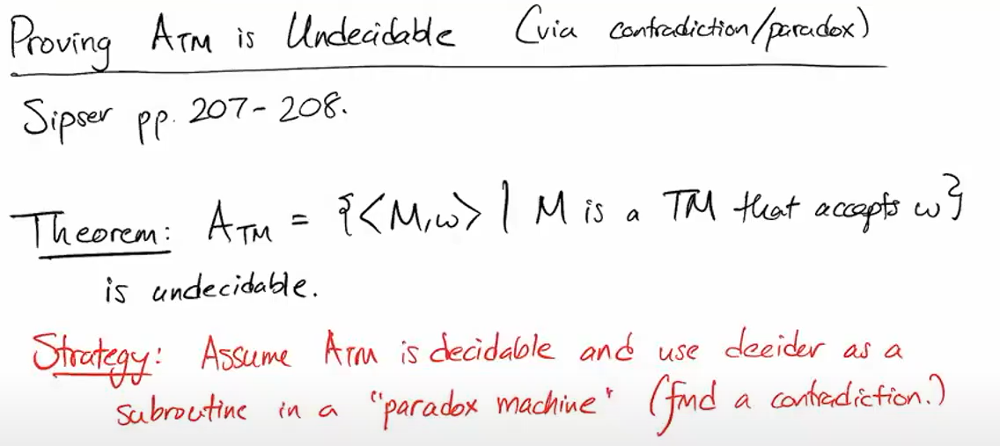

You're viewing the main page of my teaching portfolio. To learn more about my research and service activites, see my homepage.
I. Teaching Philosophy
The dominant paradigm for teaching large STEM classes is lecture-based instruction, and lecture blocks remain at the core of my teaching practice for proof-based theory classes. But the essence of computer science theory is active, creative, and analytical, embodied in precisely tailoring an algorithm to its task or teasing out the intricate relationship between two data objects. As a teacher, I believe it is my responsibility to incorporate emerging best practices for teaching and learning into the classroom in ways that complement my discipline, and ask:
- Which learning objectives are best achieved by lecture, and which are better served by interactive learning?
- Why do some web artifacts and video resources support existing coursework, and others distract from it?
- When are traditional teaching methods most effective, and when do they systematically privilege certain learners?
My teaching strategy starts with continuing self-education, including surveys of excellent teaching environments and direct faculty reports on innovative practices ([1], [6]). Often, computer science has much to learn from teaching concepts that are well-established in humanities disciplines, such as Active Learning and Universal Design for Learning (UDL) ([9]). However, these are often tailored for seminar-style classes in which prose writing and discussion are already the primary means of interaction. It has been challenging and rewarding to adapt these practices to computer science theory classes.
By their second year of a computer science major, many students are conditioned to display passive receptivity when they enter a large lecture hall. Over time, I’ve developed a teaching persona designed to bust this mentality, with tactics including an informal demeanor, an active physical presence and straightforward appeals to students’ own desires for a friendly learning space. In the first lecture, I call out the most mundane challenges of the course and invite students to participate in solving them. “Awkward seats in this lecture hall, huh? Maybe we should take a break every little while. And feel free to sit up and stretch at any time,” or, “I know from our pre-class survey that some of you will miss classes for work and family-related reasons. Here’s my plan to help you catch-up on missed material—if you had to miss today’s class, what sort of questions would help you get oriented?”
Research shows that students learn complex skills, such as proof and algorithm design, through active practice ([8]); however, my students report feeling most confident and capable when they have scaffolding and supervision. To mediate between the extremes of structure and self-direction, I use a "semi-flipped" teaching model. I weave question-response interaction, animations and videos, student-led proof activities, individual and small-group puzzles, and classroom assessment techniques ([3]) into my lecture. The first time I paused to offer students an unfamiliar puzzle, I remember my surprise at the result: a buzz of curiosity swept the room, and students displayed impressive creativity in inventing strategies from scratch. When the time came to define automata in full mathematical formality, students found their intuitions primed. Students report in-class activities as a highlight of the course:
"I enjoyed the challenge problems in class A LOT...anything to make it more collaborative and to get
hands-on with it, while we can get it explained right after, is great."
"Your course webpage is far and away the best looking/functioning that I've seen in academia, and having that supplemental review material up on YouTube is awesome."

Although there's no substitute for in-person interaction, I recognize that students spend at least as much time with my course material outside the classroom as within it. For this reason, I make comprehensive, engaging, and accessible course materials a high priority.
Work outside class remains centered on problem sets, but each problem is scaffolded by my three R's: Rationale, References, and Rubric (see Course Materials). Students (and their instructor) should know why they are being asked to perform certain tasks, and this is provided for each question by the footnoted Rationale. When working on a hard problem, time spent experimenting with solutions is well-spent, but time spent with no idea where to start, or worse, confused about the question itself, is not. On problem sets, the linked Resources are intended to get students thinking in the right direction without giving away the answers. After homework is submitted, the solution Rubric lays out a complete answer and highlights the important conceptual pieces, often with an explanation of how one might approach the problem. Students quickly learn how to leverage the three R's: on a 6-point Likert scale, 71% of students indicated strong agreement with the statement `Resources and Rationale footnotes on homeworks were a useful course feature that helped me learn'.
From a challenging year of virtual teaching in 2021, I learned that certain parts of asynchronous learning, such as pausing and tweaking playback speed, navigating rapidly to relevant material, and navigating the course as a single, visually coherent object, can indeed help students learn. Accordingly, I try to make asynchronous material that makes the most of the modality, and that complements the classroom experience without replacing it. Outside of class and in addition to problem sets, students might brush up on tough concepts using the lightning review and example videos that I post to YouTube, or put together a targeted study plan using the comprehensive course skeleton to get a bird's-eye view of what we've recently learned. (90% and 80% of students, respectively, reported that they made significant use of these resources during the course.) The several ways to engage with course material are by design, in accordance with UDL.
Because students have many resources to choose from, clear guidance and organization are critical. I eliminate uncertainty whenever possible: my goal is that my students always know what is expected of them and where to go for help. Among other things, this means clear timelines and due dates for problem sets, lecture notes, review videos and the course skeleton. Classroom organization is one of my strengths as an instructor: in 2022, 100% of students in my class gave me the highest possible rating in this category on course evaluations. (See Student Feedback on classroom organization.)
My teaching style is predicated on mutual trust and offers warmth and compassion (two classroom essentials I would never teach without). I spend much of my energy on student interaction, targeting 4-6 lively office hours per week on staggered schedules designed to complement my students’ busy lives. I believe in prompt intervention when a student falters: a dropped problem set can mark the moment when a student’s experience takes a turn for the worse, but it can also be an opportunity for them to re-engage and surpass themself. When a student struggles with a certain topic, they recieve an email from me outlining the ways they can bounce back. Occasionally, I receive comments such as,
“[struggling on two early problem sets] could have become a downward spiral for me, but a second
chance for making up not only reversed the momentum but also motivated me to sit down and dive
into the topic.”
Giving students the ability to catch up and re-engage with a course that challenges them is exactly what I hope to achieve. (See Student Feedback on support and approachability.)
Teaching is a rich and complex practice, with the potential to transform lives if done exceptionally well and to improve them even if done just a little bit better. I try to approach each semester with a renewed sense of respect for the task of guiding students to success, with gratitude for their hard work and curiosity, and with responsibility for the trust they place in me. I want my students to exercise the skills they've learned with confidence, but, more importantly, to place their creative actions in context: how will their work as computer scientists affect others? Building these capacities in students is the most important part of my professional life.
II. Commitment to Equity
As I see it, the teacher's role is to develop ability, awareness, and confidence in all of their students so that they can succeed and accomplish good in the world. Thus teaching and promoting inclusion are inseparable goals. Moreover, equitable classrooms and anti-oppressive department spaces are necessary to grow computer scientists with a broad range of identities and life experiences, and with correspondingly diverse research interests and career priorities. These in turn are essential to create a culture of reflective research in academia and intentional technological progress towards human welfare in industry. In other words, higher standards of equity are required not only for the welfare of our students, but for our discipline and our future society.
Within the classroom, I focus on an individually supportive teaching experience for every student in my class. In practice, this means building a universally accessible curriculum (see Teaching Philosophy.) It means taking measures to mitigate unconscious bias and stereotype threat, such as anonymizing problem set submissions and giving take-home exams. It means reducing inequity due to grades by narrowing their scope to students' demonstrated ability to meet learning objectives and excluding subjective standards of behavior that descend from the factory model of learning ([4], [7]). It means building supportive peer networks for students and finding ways for them to keep each other on track ([10]). Equitable, supportive teaching is not as simple as universal leniency: instead, it requires an ongoing effort to balance strong incentives to learn with student dignity and autonomy, maintaining high standards while ensuring all students have a path to meet them.
Beyond the classroom, I work to change the university, disciplinary, and social context in which my teaching is embedded. Like many of my professional peers, I inhabit the intersection of several privileged identity categories and inherit the responsibility to dismantle structural inequity in computer science. This includes supporting students through volunteering and mentorship programs, ensuring a democratic voice for students and student workers, pursuing equity in admissions, and participating in computer science outreach to incoming students and potential students beyond the university. In 2022, I received Columbia Computer Science's highest award for department service. (For more about my past service commitments, see my Service Page.)
For four years, I coordinated the Emerging Scholars Program, Columbia’s peer-led workshop and discussion seminar that accompanies students’ first course in the major. The tight-knit environment provides an opportunity to pursue a range of unique learning objectives, from building problem-solving confidence, forming supportive peer groups, and offering peer mentorship to exploring the full range of career opportunities within computer science and interacting with a range of computer science professionals. Over my four years of joint leadership with co-coordinator Roland Maio, we grew the program from four sections with an average of 20 graduating students to as many as twelve sections with over 100.
I devote a substantial portion of my time outside of teaching and research to individual mentorship. In the past, I’ve mentored students with rising identities in computer science through formal programs, including Barnard BEARS, Columbia Women in Computer Science (WICS), the Williams College CS Alumni Mentorship Program and the Lumiere Research Scholars Program. About half of my mentorship time is informal, spent with students in college or in high school that I’ve taught or presented to. I end every guest lecture with a slide containing my email address and specific instructions, to bypass the anxiety barrier that often prevents students from asking for help:
“I’m giving you this email address because I want you to contact me. All you need to write is ‘Hi Tim,
I saw your talk about X and I’m curious about Y and Z.’ I mean it! Do it right after the talk if you
think I can help you.”
The conversations that begin with these form emails have surprised and educated me, broadening my perspective on computer science and career issues more broadly. Many are ongoing years later.
I'm excited to contribute to the field I love by making it as supportive to others as it has been to me. In the future, I look forward to contributing to a computer science department that actively affirms the interest of students of all levels of experience and supports them in their development, that acknowledges and works to dismantle structural racism and sexism in computer science, and that supports faculty with the time and resources required to improve the learning experience for students.
III. Teaching Experience
- Instructor for Columbia COMS W3261: Computer Science Theory. Summer 2023. Course webpage
- Teaching Development Program Advanced Track CTL TDP webpage
- Instructor for Columbia COMS W3261: Computer Science Theory. Summer 2022. Course webpage
- Instructor for Columbia COMS W3261: Computer Science Theory. Summer 2021. Course webpage
- Peer lectures in Columbia CSCI 6261: Advanced Cryptography. 2/5/2020; 2/11/2020.
- Guest lecture in Columbia CSCI 4236: Computational Complexity. 11/1/2019.
- Substitute for Columbia CSOR 4231: Analysis of Algorithms. 10/24/19.
- TA for Columbia CSOR 4231: Analysis of Algorithms. Fall 2019.
- 2019-2020 Teaching Observation Fellowship. CTL TOF webpage
- Innovative Teaching Summer Institute (ITSI) Certification. CTL ITSI webpage
- TA for Columbia COMS 3261: Computer Science Theory. Summer 2019.
- TA for Columbia COMS 6998-06: Computation and the Brain. Fall 2018.
The Teaching Development Program is a multiyear teaching certification in association with Columbia's Center for Teaching and Learning (CTL). It focuses on cultivating, documenting, and reflecting upon evidence-based, student-centered teaching. The TDP Advanced Track is the highest level teaching certification offered by the CTL.
This was the first course I taught as a primary instructor at Columbia. It presented immediate challenges: I taught over 120 students, at a rapid pace of 6 in-class hours per week, in three modalities (in-person, livestream, and asynchronous video). However, it provided a chance to practice accessible teaching: students required a variety of accommodations and engagement strategies to benefit fully from the course.
"Teaching Observation Fellows are Columbia University doctoral students who work closely with the Center for Teaching and Learning and with each other on a range of supportive, formative, peer-to-peer teaching observation activities."
-Columbia CTL"The Innovative Teaching Summer Institute (ITSI) is a four-day series of collaborative workshops, discussions, and shared reflections all centered on the use of emerging teaching practices and technologies to support effective teaching. ITSI is a unique opportunity for graduate student instructors to work with peers from a variety of disciplines, discuss pedagogical priorities, connect with resources and support, and develop themselves as innovative teachers."
-Columbia CTL
[1] Bain, Ken. What the Best College Teachers Do. Harvard University Press, 2004.
[2] Brookfield, Stephen D. Becoming a Critically Reflective Teacher. John Wiley & Sons, 2017.
[3] Cross, K. Patricia, and Thomas A. Angelo. "Classroom Assessment Techniques. A Handbook for Faculty." (1988).
[4] Feldman, Joe. Grading for Equity: What It Is, Why It Matters, and How It Can Transform Schools and Classrooms. Corwin Press, 2018.
[5] Gurung, Regan AR. "The Scholarship of Teaching and Learning: Scaling New Heights, but It May Not Mean What You Think It Means." Copyright and Other Legal Notices: 61.
[6] Honeycutt, Barbi, ed. Flipping the College Classroom: Practical Advice from Faculty. Magna Publications, 2016.
[7] Kohn, Alfie, and Susan D. Blum. Ungrading: Why Rating Students Undermines Learning (and What to Do Instead). West Virginia University Press, 2020.
[8] Michael, Joel. "Where's the Evidence that Active Learning Works?" Advances in Physiology Education (2006).
[9] Rose, David H., and Anne Meyer. Teaching Every Student in the Digital Age: Universal Design for Learning. Association for Supervision and Curriculum Development, 2002.
[10] Treisman, Uri. "Studying Students Studying Calculus: A Look at the Lives of Minority Mathematics Students in College." The College Mathematics Journal 23.5 (1992): 362-372.
[11] Tomlinson, Carol Ann. "Reconcilable differences: Standards-based teaching and differentiation." Educational leadership 58.1 (2000): 6-13.
 LICENSED UNDER CC BY-SA 2015-2021.
LICENSED UNDER CC BY-SA 2015-2021.